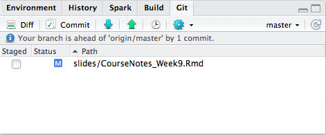

Chapter 9 Reproducible research #2
Download slides for Nichole Monhait’s guest lecture
Nichole’s full repo for the lecture is at: https://github.com/nmonhait/erhs_535.
Download a pdf of the lecture slides covering this topic.
9.1 Templates
R Markdown templates can be used to change multiple elements of the style of a rendered document. You can think of these as being the document-level analog to the themes we’ve used with ggplot objects.
To do this, some kind of style file is applied when rendering document. For HTML documents, Cascading Style Sheets (CSS) (.css) can be used to change the style of different elements. For pdf files, LaTeX package (style) files (.sty) are used.
To open a new R Markdown file that uses a template, in RStudio, go to “File” -> “New File” -> “R Markdown” -> “From Template”.
Different templates come with different R packages. A couple of templates come with the rmarkdown package, which you likely already have.
Many of these templates will only render to pdf.
To render a pdf from R Markdown, you need to have a version of TeX installed on your computer. Like R, TeX is open source software. RStudio recommends the following installations by system:
- For Macs: MacTeX
- For PCs: MiKTeX
Links for installing both can be found at http://www.latex-project.org/ftp.html
Current version of TeX: 3.14159265.
The tufte package has templates for creating handouts typeset like Edward Tufte’s books.
This package includes templates for creating both pdf and HTML documents in this style.
The package includes special functions like newthought, special chunk options like fig.fullwidth, and special knitr engines like marginfigure. Special features available in the tufte template include:
- Margin references
- Margin figures
- Side notes
- Full width figures
The rticles package has templates for several journals:
- Journal of Statistical Software
- The R Journal
- Association for Computing Machinery
- ACS publications (Journal of the American Chemical Society, Environmental Science & Technology)
- Elsevier publications
Some of these templates create a whole directory, with several files besides the .Rmd file. For example, the template for The R Journal includes:
- The R Markdown file in which you write your article
- “RJournal.sty”: A LaTeX package (style) file specific to The R Journal. This file tells LaTeX how to render all the elements in your article in the style desired by this journal.
- “RJreferences.bib”: A BibTeX file, where you can save citation information for all references in your article.
- “Rlogo.png”: An example figure (the R logo).
Once you render the R Markdown document from this template, you’ll end up with some new files in the directory:
- “[your file name].tex”: A TeX file with the content from your R Markdown file. This will be “wrapped” with some additional formatting input to create “RJwrapper.tex”.
- “RJwrapper.tex”: A TeX file that includes both the content from your R Markdown file and additional formatting input. Typically, you will submit this file (along with the BibTeX, any figure and image files, and possibly the style file) to the journal.
- “RJwrapper.pdf”: The rendered pdf file (what the published article would look like)
This template files will often require some syntax that looks more like LaTeX than Markdown.
For example, for the template for The R Journal, you need to use \citep{} and \citet{} to include citations. These details will depend on the style file of the template.
As a note, you can always use raw LaTeX in R Markdown documents, not just in documents you’re creating with a template. You just need to be careful not to mix the two. For example, if you use a LaTeX environment to begin an itemized list (e.g., with begin{itemize}), you must start each item with item, not -.
You can create your own template. You create it as part of a custom R package, and then will have access to the template once you’ve installed the package. This can be useful if you often write documents in a certain style, or if you ever work somewhere with certain formatting requirements for reports.
RStudio has full instructions for creating your own template: http://rmarkdown.rstudio.com/developer_document_templates.html
9.2 R Projects
9.2.1 Organization
So far, you have run much of your analysis within a single R script or R Markdown file. Often, any associated data are within the same working directory as your script or R Markdown file, but the files for one project are not separated from files for other projects.
As you move to larger projects, this kind of set-up won’t work as well. Instead, you’ll want to start keeping all materials for a project in a single and exclusive directory.
Often, it helps to organize the files in a project directory into subdirectories. Common subdirectories include:
data-raw: Raw data and R scripts to clean the raw data.data: Cleaned data, often saved as.RDataafter being generated by a script indata-raw.R: Code for any functions used in analysis.reports: Any final products rendered from R Markdown and their original R Markdown files (e.g., paper drafts, reports, presentations).
9.2.2 Creating R Projects
RStudio allows you to create “Projects” to organize code, data, and results within a directory. When you create a project, RStudio adds a file with the extension “.Rproj” to the directory.
There are some advantages to setting a directory to be an R Project. The project:
- Automatically uses the directory as your current working directory when you open the project.
- Coordinates well with git version control and GitHub repository system.
- Opens a “Files” window for navigating project files in an RStudio pane when you open the project.
You can create a new project from scratch or from an existing directory.
To create an R project from a working directory, in RStudio go to “File” -> “New Project” -> “New Directory”. You can then choose where you want to save the new project directory.
9.3 git
Git is a version control system.
It saves information about all changes you make on all files in a repository. This allows you to revert back to previous versions and search through the history for all files in the repository.
Git is open source. You can download it for different operating systems here:
You will need git on your computer to use git with RStudio and create local git repositories you can sync with GitHub repositories.
Before you use git, you should configure it. For example, you should make sure it has your name and email address.
You can configure git with commands at the shell. For example, I would run the following code at a shell to configure git to have my proper user name and email:
git config --global user.name "Brooke Anderson"
git config --global user.email "brooke.anderson@colostate.edu"Sometimes, RStudio will automatically find git (once you’ve installed git) when you start RStudio.
However, in some cases, you may need to take some more steps to activate git in RStudio. To do this, go to “RStudio” -> “Preferences” -> “Git/SVN”. Choose “Enable version control”. If RStudio doesn’t find your version of git in the “Git executable” box, browse for it.
9.3.1 Initializing a git repository
You can initialize a git repository using commands from the shell. To do that, take the following steps (first check that it is not already a git repository):
- Use a shell (“Terminal” on Macs) to navigate to to that directory. You can use
cdto do that (similar tosetwdin R). - Once you are in the directory, run
git status. If you get the messagefatal: Not a git repository (or any of the parent directories): .git, it is not yet a git repository. - If you do not get an error from
git status, the directory is already a repository. If you do get an error, rungit initto initialize it as a repository.
For example, if I wanted to make the “fars_analysis” directory, which is a direct subdirectory of my home directory, a git repository, I could open a shell and run:
cd ~/fars_analysis
git initYou can also initialize a git repository for a directory that is an R Project directory through R Studio.
- Open the Project.
- Go to “Tools” -> “Version Control” -> “Project Setup”.
- In the box for “Version control system”, choose “Git”.
Note: If you have just installed git, and have not restarted RStudio, you’ll need to do that before RStudio will recognize git. If you do not see “Git” in the box for “Version control system”, it means either that you do not have git installed on your computer or that RStudio was unable to find it.
Once you initialize the project as a git repository, you should have a “Git” window in one of your RStudio panes (top right pane by default).
As you make and save changes to files, they will show up in this window for you to commit. For example, this is what the Git window for our coursebook looks like when I have changes to the slides for week 9 that I need to commit:

9.3.2 Committing
When you want git to record changes, you commit the files with the changes. Each time you commit, you have to include a short commit message with some information about the changes.
You can make commits from a shell. However, in this course we’ll just make commits from the RStudio environment.
To make a commit from RStudio, click on the “Commit” button in the Git window. That will open a separate commit window that looks like this:

In this window, to commit changes:
- Click on the files you want to commit to select them.
- If you’d like, you can use the bottom part of the window to look through the changes you are committing in each file.
- Write a message in the “Commit message” box. Keep the message to one line in this box if you can. If you need to explain more, write a short one-line message, skip a line, and then write a longer explanation.
- Click on the “Commit” button on the right.
Once you commit changes to files, they will disappear from the Git window until you make and save more changes in them.
9.3.3 Browsing history
On the top left of the Commit window, you can toggle to “History”. This window allows you to explore the history of commits for the repository.

GitHub allows you to host git repositories online. This allows you to:
- Work collaboratively on a shared repository
- Fork someone else’s repository to create your own copy that you can use and change as you want
- Suggest changes to other people’s repositories through pull requests
To push local repositories to GitHub and fork other people’s repositories, you will need a GitHub account.
You can sign up at https://github.com. A free account is fine.
The basic unit for working in GitHub is the repository. You can think of a repository as very similar to an R Project— it’s a directory of files with some supplemental files saving some additional information about the directory.
While R Projects have this additional information saved as an “.RProj” file, git repositories have this information in a directory called “.git”. Because this pathname starts with a dot, it won’t show up in many of the ways you list files in a directory. From a shell, you can see files that start with . by running ls -a from within that directory.
9.3.4 Linking local repo to GitHub repo
If you have a local directory that you would like to push to GitHub, these are the steps to do it.
First, you need to make sure that the directory is under git version control. See the notes on initializing a repository.
Next, you need to create an empty repository on GitHub to sync with your local repository. Do that by:
- In GitHub, click on the “+” in the upper right corner (“Create new”).
- Choose “Create new repository”.
- Give your repository the same name as the local directory you’d like to connect it to. For example, if you want to connect it to a directory called “fars_analysis” on your computer, name the repository “fars_analysis”.
- Leave everything else as-is (unless you’d like to add a short description in the “Description” box). Click on “Create repository” at the bottom of the page.
Now you are ready to connect the two repositories.
First, you’ll want to change some settings in RStudio so GitHub will recognize that your local repository belongs to you, rather than asking for you password every time.
- In RStudio, go to “RStudio” -> “Preferences” -> “Git / svn”. Choose to “Create RSA key”.
- Click on “View public key”. Copy what shows up.
- Go to your GitHub account and navigate to “Settings”. Click on “SSH and GPG keys”.
- Click on “New SSH key”. Name the key something like “RStudio” (you might want to include the device name if you’ll have SSH keys from RStudio on several computers). Past in your public key in the “Key box”.
9.3.5 Syncing RStudio and GitHub
Now you’re ready to push your local repository to the empty GitHub repository you created.
- Open a shell and navigate to the directory you want to push. (You can open a shell from RStudio using the gear button in the Git window.)
- Add the GitHub repository as a remote branch with the following command (this gives an example for adding a GitHub repository named “ex_repo” in my GitHub account, “geanders”):
git remote add origin git@github.com:geanders/ex_repo.git- Push the contents of the local repository to the GitHub repository.
git push -u origin masterTo pull a repository that already exists on GitHub and to which you have access (or that you’ve forked), first use cd to change a shell into the directory where you want to put the repository then run git clone to clone the repository locally. For example, if I wanted to clone a GitHub repository called “ex_repo” in my GitHub account, I would run:
git clone git@github.com:geanders/ex_repo.gitOnce you have linked a local R project with a GitHub repository, you can push and pull commits using the blue down arrow (pull from GitHub) and green up arrow (push to GitHub) in the Git window in RStudio.
GitHub helps you work with others on code. There are two main ways you can do this:
- Collaborating: Different people have the ability to push and pull directly to and from the same repository. When one person pushes a change to the repository, other collaborators can immediately get the changes by pulling the latest GitHub commits to their local repository.
- Forking: Different people have their own GitHub repositories, with each linked to their own local repository. When a person pushes changes to GitHub, it only makes changes to his own repository. The person must issue a pull request to another person’s fork of the repository to share the changes.
9.3.6 Issues
Each original GitHub repository (i.e., not a fork of another repository) has a tab for “Issues”. This page works like a Discussion Forum.
You can create new “Issue” threads to describe and discuss things that you want to change about the repository.
Issues can be closed once the problem has been resolved. You can close issues on the “Issue” page with the “Close issue” button.
If a commit you make in RStudio closes an issue, you can automatically close the issue on GitHub by including “Close #[issue number]” in your commit message and then pushing to GitHub.
For example, if issue #5 is “Fix typo in section 3”, and you make a change to fix that typo, you could make and save the change locally, commit that change with the commit message “Close #5”, and then push to GitHub, and issue #5 in “Issues” for that GitHub repository will automatically be closed, with a link to the commit that fixed the issue.
9.3.7 Pull request
You can use a pull request to suggest changes to a repository that you do not own or otherwise have the permission to directly change.
You can also use pull requests within your own repositories. Some people will create a pull request every time they have a big issue they want to fix in one of their repositories.
In GitHub, each repository has a “Pull requests” tab where you can manage pull requests (submit a pull request to another fork or merge in someone else’s pull request for your fork).
Take the following steps to suggest changes to someone else’s repository:
- Fork the repository
- Make changes (locally or on GitHub)
- Save your changes and commit them
- Submit a pull request to the original repository
- If there are not any conflicts and the owner of the original repository likes your changes, he or she can merge them directly into the original repository. If there are conflicts, these need to be resolved before the pull request can be merged.
9.3.8 Merge conflicts
At some point, you will get merge conflicts. These happen when two people have changed the same piece of code in two different ways at the same time.
For example, say Rachel and are both working on local versions of the same repository, and I change a line to mtcars[1, ] while Rachel changes the same line to head(mtcars, 1). Rachel pushes to the GitHub version of the repository before I do.
When I pull the latest commits to the GitHub repository, I will have a merge conflict for this line. To be able to commit a final version, I’ll need to decide which version of the code to use and commit a version of the file with that code.
Merge conflicts can come up in a few situations:
- You pull in commits from the GitHub branch of a repository you’ve been working on locally.
- Someone sends a pull request for one of your repositories.
If there are merge conflicts, they’ll show up like this in the file:
<<<<<<< HEAD
mtcars[1, ]
=======
head(mtcars, 1)
>>>>>>> remote-branchTo fix them, search for all these spots in files with conflicts, pick the code you want to use, and delete everything else.
For the example conflict, I might change the file from this:
<<<<<<< HEAD
mtcars[1, ]
=======
head(mtcars, 1)
>>>>>>> remote-branchTo this:
head(mtcars, 1)Then you can save and commit the file.
9.3.9 Find out more
If you’d like to find out more, Hadley Wickham has a great chapter on using git and GitHub with RStudio in his R Packages book:
9.4 In-course exercise
9.4.1 Organizing a project
In this part of the group exercise, you will set up an R Project to use for the next homework assignment. You will want to set up a similar project for your final group project.
- First, you need to create a new project. In RStudio, go to “File” -> “New Project” -> “New Directory”. Choose where you want to save this directory and what you want to name it.
- Once you open the project, one of the RStudio panes should have a tab called “Files”. This shows the files in this project directory and allows you to navigate through them. Currently, you won’t have any files other than the R project file (“.Rproj”). As a next step, create several subdirectories. We’ll use these to structure the data and R Markdown files for your homework. Create the following subdirectories (you can use the “New Folder” button in the RStudio “Files” pane):
datawriting
- Download the data for the homework from the Washington Post’s GitHub page: https://github.com/washingtonpost/data-homicides. Save this data inside your R project in the
datasubdirectory
9.4.2 Initializing git for an R Project
- If you do not already have one, sign up for a GitHub account. The free option is fine.
- If you do not already have git installed on your computer, install it: https://git-scm.com/downloads
- Restart RStudio. go to “RStudio” -> “Preferences” ->“Git/SVN”. Choose “Enable version control”. If RStudio doesn’t find yourversion of git in the “Git executable” box, browse for it.
- Open your homework project in RStudio. Change your Project settings to initialize git for this project (see the course notes for tips on how to do that).
- Open a shell from R using the gear symbol in the “Git” pane you should now see in RStudio. Configure git from this shell. For example, I would open a shell and run:
git config --global user.name "Brooke Anderson"
git config --global user.email "brooke.anderson@colostate.edu"Note that you only need to do this once (until you get a new computer or, maybe, update git).
- Go to the “Commit” window. Click on all of the files you see there, and then make an initial commit
using “Initial commit” as your commit message.
- The writing subdirectory will have your R Markdown file and its output. Create a new R Markdown file (“File” -> “New File” -> “R Markdown”) and save it to this subdirectory. You can change the name and date for the file if you’d like. Delete all the text that comes as a default. Write a piece of code that lists the files you saved in the data subdirectory. Remember that the working directory for an R Markdown file is the directory in which it’s saved, so you may need to use a relative pathname that goes up one directory (..) and then goes into data subdirectory.
- Commit this change using the “Commit” window. After you commit the changes, look at the “History” window to see the history of your commits.
9.4.3 Linking your project with a GitHub repository
(See course notes for more on these steps.)
- Login to your GitHub account online. Create an empty GitHub repository for the project. Give it the same name as the name of your R project directory.
- If you do not already have an RSA kay, create one in RStudio and add it as an SSH key in your GitHub settings. If you already have a key (you almost certainly know if you do), see if you can copy it and submit it in GitHub.
- Set this empty online GitHub repository as the remote branch of your local git repository for the project.
- Push your local repository to this GitHub repository.
- Go to your GitHub account and make sure the repository was pushed.
- Try making some more changes to your local repository. Commit the changes, then use the green up arrow in the Git window to push the changes to your GitHub repository.